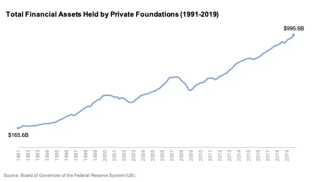

Who We Are
Yuva Savera is a youth-led movement aiming to bridge the gap between those in need and the passionate youth of India who are ready to serve. We connect Yuva Sevaks (volunteers) with individuals seeking urgent help, be it education, healthcare, shelter, or emotional support.
Our Mission
Our mission is to empower the youth to lead change by supporting vulnerable individuals and communities with compassion and action.
How We Work
1. Share Your Need
People in need post a request with video or description of their problem.
2. Get Connected
Our system connects their request with Yuva Sevaks and nearby help sources.
3. Receive Assistance
Volunteers reach out and deliver support — education, food, shelter, health kits, etc.
4. Create Impact
Each act of help becomes a story of real-life transformation.
Our Core Values
- 🌱 Empowerment: Mobilizing youth to take charge of social issues.
- 💛 Humanity: We put people before process.
- 🔍 Transparency: Every step, clear and accountable.
- 🤝 Inclusion: Help has no boundaries — caste, creed, or gender.
Our Goals
- 📚 Enable every child’s right to education
- 🚑 Provide healthcare to the remotest families
- 📢 Spread civic awareness & youth leadership
- 🚨 Quick support during emergencies
- 👩🦰 Protect women through shelter & dignity drives
Be a Part of the Light
Whether you need help or want to help, Yuva Savera welcomes you with open arms.
Become a Yuva Sevak Seek Support